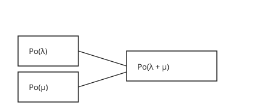

<script src="/assets/redirect.js"></script>
<section class="theory" data-section="S2-3.4">
<h2>3.4 Linear combinations of Poisson distributions</h2>
<p class="src">Based on Cambridge International AS &amp; A Level Mathematics: Probability &amp; Statistics 2 Coursebook, Chapter 3, printed pp.64-67. Printed pages were read from S2.pdf (printed 64-67 = PDF 76-79). Own wording and new numbers.</p>
<p class="key-words"><strong>Key words:</strong> <em>sum of independent Poisson distributions</em></p>
<p>The <strong>sum of independent Poisson distributions</strong> on the same interval is again Poisson. If \(X\sim\operatorname{Po}(\lambda)\) and \(Y\sim\operatorname{Po}(\mu)\) are independent, then
\[X+Y\sim\operatorname{Po}(\lambda+\mu).\]
Rates must first be adjusted so that they refer to the same interval of time (or space) before the parameters are added. The result does not extend in the same simple way to a difference \(X-Y\), or to a multiple \(aX\) with \(a\neq 1\).</p>
<figure>

<figcaption>Independent Poisson random variables on the same interval add by adding their parameters.</figcaption>
</figure>
<div class="worked-example"><h4>Worked example 1</h4>
<p class="src">Book: printed pp.64-67. New integer numbers.</p>
<p>\(X\sim\operatorname{Po}(3)\) and \(Y\sim\operatorname{Po}(5)\) are independent. Write down the parameter of the distribution of \(X+Y\).</p>
<ol class="steps">
<li>\(X+Y\sim\operatorname{Po}(8)\), so the parameter is \(8\). <span class="mark">A1</span></li>
</ol></div>
<div class="worked-example"><h4>Worked example 2</h4>
<p class="src">Book: printed pp.64-67. New integer numbers.</p>
<p>The number of events in a 5-minute period has the distribution \(\operatorname{Po}(10)\). Write down the parameter of the distribution for a 1-minute period, using the same model with a constant rate.</p>
<ol class="steps">
<li>The 1-minute parameter is \(10/5=2\). <span class="mark">A1</span></li>
</ol></div>
<h3>Common mistakes</h3><ul>
<li>Adding Poisson parameters that refer to different intervals of time, without first scaling to a common interval.</li>
<li>Writing \(aX\sim\operatorname{Po}(a\lambda)\) for a constant \(a\neq 1\). A multiple of a Poisson random variable is not in general Poisson.</li>
</ul>
<div class="quick-check" data-q="QC1">
<h4>Quick check 1</h4>
<p>\(X\sim\operatorname{Po}(3)\) and \(Y\sim\operatorname{Po}(5)\) are independent. Write down the parameter of the distribution of \(X+Y\).</p>
<details><summary>Show answer</summary>
<ol class="steps">
<li>The parameter is \(8\). <span class="mark">A1</span></li>
</ol>
<p class="final">\(8\)</p>
</details>
</div>
<div class="quick-check" data-q="QC2">
<h4>Quick check 2</h4>
<p>The number of events in a 5-minute period has the distribution \(\operatorname{Po}(10)\). Write down the parameter of the distribution for a 1-minute period, using the same model with a constant rate.</p>
<details><summary>Show answer</summary>
<ol class="steps">
<li>The parameter is \(2\). <span class="mark">A1</span></li>
</ol>
<p class="final">\(2\)</p>
</details>
</div>
<div class="quick-check" data-q="QC3">
<h4>Quick check 3</h4>
<p>\(X\sim\operatorname{Po}(6)\) and \(Y\sim\operatorname{Po}(4)\) are independent. Write down the parameter of the distribution of \(X+Y\).</p>
<details><summary>Show answer</summary>
<ol class="steps">
<li>The parameter is \(10\). <span class="mark">A1</span></li>
</ol>
<p class="final">\(10\)</p>
</details>
</div>
<h3>Past paper</h3>
<p class="src">9709/72/M/J/11 Question 5(i) only, 3 marks. Official QP and official MS. Part (ii) (a hypothesis test) is omitted. The question number was checked against the official QP.</p>
<p>The number of adult customers arriving in a shop during a 5-minute period is modelled by a random variable with distribution \(\operatorname{Po}(6)\). The number of child customers arriving in the same shop during a 10-minute period is modelled by an independent random variable with distribution \(\operatorname{Po}(4.5)\).</p>
<p>(i) Find the probability that during a randomly chosen 2-minute period, the total number of adult and child customers who arrive in the shop is less than 3. [3]</p>
<details><summary>Show official scheme</summary>
<ol class="steps">
<li>\(\operatorname{Po}(3.3)\) seen or implied. Official MS: B1. <span class="mark">B1</span></li>
<li>Poisson \(\operatorname{P}(0)+\operatorname{P}(1)+\operatorname{P}(2)\) (a wrong parameter may still earn this mark; \(\operatorname{P}(3)\) may be included in error). Official MS: M1. <span class="mark">M1</span></li>
<li>\(0.359\). Official MS: A1. <span class="mark">A1</span></li>
</ol></details>
</section>
